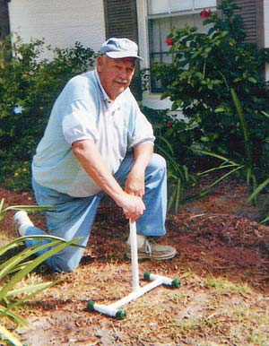

Last year, while I finished touching up a few spots on my driveway, I started to get up, paint pot in one hand and brush in the other. Suddenly, the old right knee gave out. Falling backwards, I quickly jammed my right foot back for balance, breaking my big toe. A few days later, I tried to think of something that might help support me as I tried to stand after kneeling. I fashioned this handy tool for the “kneeling impaired” gardener.
Parts (total cost about $4)
1 15-inch piece of ¾-inch plastic pipe for the leg
2 5-inch pieces for the feet
4 4-inch pieces for the toes
4 ¾-inch “Ts” for the joints
4 1-inch rubber crutch tips
Plastic pipe glue
Household glue
To make sure you know where all the pieces belong, first put the project together without the glue. Then do it again with the glue, which dries fairly rapidly. Happy gardening!
|
 WALT GABEL This gitter-upper will help save wear and tear on your knees. |
|
|